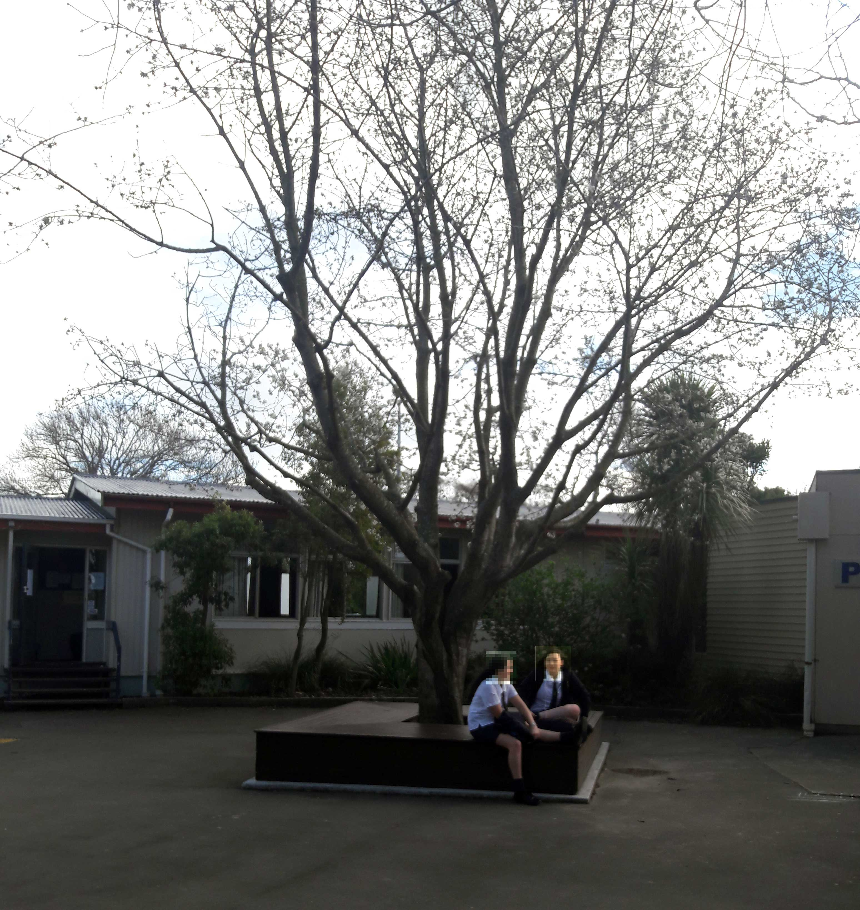

The oldest trees that still survive on the Riccarton High School grounds are the native trees alongside the drive from Main South Road, which were planted in 1957 while the school was being constructed. The large trees outside Science and Technology blocks which face the main courtyard were planted in the winter of 1958, along with the distinctive cypress tree at the entrance to the Hall.
